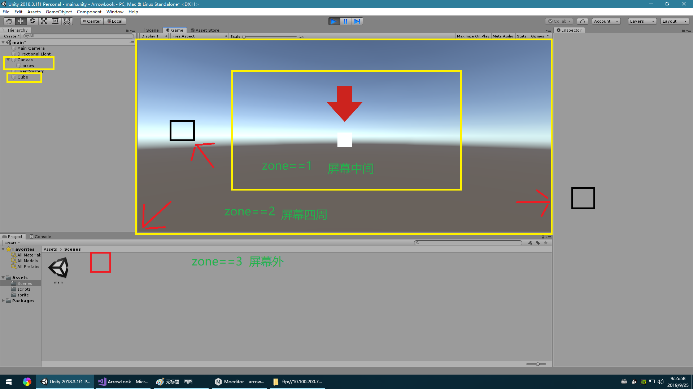

我们最终要实现是效果是根据cube在不同位置，箭头有不同的指引效果
1.在屏幕中间，箭头停留在cube正上方
2.在屏幕四周，箭头停留在cube附件
3.在屏幕外面，箭头在屏幕边缘指引cube

1
2
3
4
5
6
7
8
| private Quaternion lookat2D(Vector3 self,Vector3 Targer) //实现2dlookat
{
Vector2 direction = Targer - self;
//以弧度为单位计算并返回 y/x 的反正切值。返回值表示相对直角三角形对角的角，其中 x 是临边边长，而 y 是对边边长。
//返回值是在x轴和一个二维向量开始于0个结束在(x,y)处之间的角。
float angle = Mathf.Atan2(direction.y, direction.x) * Mathf.Rad2Deg;
//计算角度返回
return Quaternion.AngleAxis(angle, Vector3.forward);
|
实现箭头指引后，我们还需要确定箭头应该摆在上面位置，在不同区域，有不同的摆放位置，我们先区分出不同的区域。cam.WorldToViewportPoint()函数可以得到3D物体在屏幕中的比例位置，返回值是0-1之间就是在屏幕内，反之在屏幕外。
1
2
3
4
5
6
7
8
| private void getZone() //得到cube在屏幕的那一区域
{
//得到cube在屏幕坐标中的比例坐标 范围是 0-1；
TargerPosition = Camera.main.WorldToViewportPoint(targer.transform.position);
if (TargerPosition.x >= 0.2 && TargerPosition.x <= 0.8 && TargerPosition.y >= 0.2 && TargerPosition.y <= 0.8) zone = 1; //在中间
else if (TargerPosition.x < 0 || TargerPosition.x > 1 || TargerPosition.y < 0 || TargerPosition.y > 1) zone = 3; //在屏幕外
else zone = 2; // 在四周
}
|
确定区域后，在根据不同的区域进行不同的处理，这里看下面完整的代码
完整代码
1
2
3
4
5
6
7
8
9
10
11
12
13
14
15
16
17
18
19
20
21
22
23
24
25
26
27
28
29
30
31
32
33
34
35
36
37
38
39
40
41
42
43
44
45
46
47
48
49
50
51
52
53
54
55
56
57
58
59
60
61
62
63
64
65
66
67
68
69
70
71
72
73
74
| using System.Collections;
using System.Collections.Generic;
using UnityEngine;
using UnityEngine.UI;
public class ArrowAt : MonoBehaviour
{
public Transform targer;
Vector3 TargerPosition;
int zone = 1;
void Start()
{
targer = GameObject.Find("Cube").transform;
}
void Update()
{
getZone();
if (zone == 1)
{
//得到cube在在屏幕的坐标
TargerPosition = Camera.main.WorldToScreenPoint(targer.transform.position);
//箭头设置成这个坐标的上面
this.transform.position = new Vector3(TargerPosition.x, TargerPosition.y + 100, 0f);
}
else if (zone == 2)
{
int tmpx = 0, tmpy = 0;
//判断cube在屏幕的左右
if (TargerPosition.x > 0.5) tmpx = -50; else tmpx = 50;
//判断cube在屏幕的上下
if (TargerPosition.y > 0.5) tmpy = -50; else tmpy = 50;
//得到cube在在屏幕的坐标
TargerPosition = Camera.main.WorldToScreenPoint(targer.transform.position);
//箭头设置cube附近
this.transform.position = new Vector3(TargerPosition.x + tmpx, TargerPosition.y + tmpy, 0f);
}
else if (zone == 3)
{
TargerPosition = Camera.main.WorldToScreenPoint(targer.transform.position);
//限制箭头不超出屏幕的左右
TargerPosition.x = Mathf.Clamp(TargerPosition.x, 50, Screen.width - 50);
//限制箭头不超出屏幕的上下
TargerPosition.y = Mathf.Clamp(TargerPosition.y, 50, Screen.height - 50);
this.transform.position = new Vector3(TargerPosition.x, TargerPosition.y, 0f);
}
//取得世界坐标物体在屏幕上的投影坐标
Vector3 screenTarger = Camera.main.WorldToScreenPoint(targer.position);
//得到箭头的指向角度
transform.rotation = lookat2D(transform.position, screenTarger);
}
private void getZone() //得到cube在屏幕的那一区域
{
//得到cube在屏幕坐标中的比例坐标 范围是 0-1；
TargerPosition = Camera.main.WorldToViewportPoint(targer.transform.position);
if (TargerPosition.x >= 0.2 && TargerPosition.x <= 0.8 && TargerPosition.y >= 0.2 && TargerPosition.y <= 0.8) zone = 1; //在中间
else if (TargerPosition.x < 0 || TargerPosition.x > 1 || TargerPosition.y < 0 || TargerPosition.y > 1) zone = 3; //在屏幕外
else zone = 2; // 在四周
}
private Quaternion lookat2D(Vector3 self,Vector3 Targer) //实现2dlookat
{
Vector2 direction = Targer - self;
//以弧度为单位计算并返回 y/x 的反正切值。返回值表示相对直角三角形对角的角，其中 x 是临边边长，而 y 是对边边长。
//返回值是在x轴和一个二维向量开始于0个结束在(x,y)处之间的角。
float angle = Mathf.Atan2(direction.y, direction.x) * Mathf.Rad2Deg;
//计算角度返回
return Quaternion.AngleAxis(angle, Vector3.forward);
}
}
|
- 参考资料 https://blog.csdn.net/iov3Rain/article/details/85165183